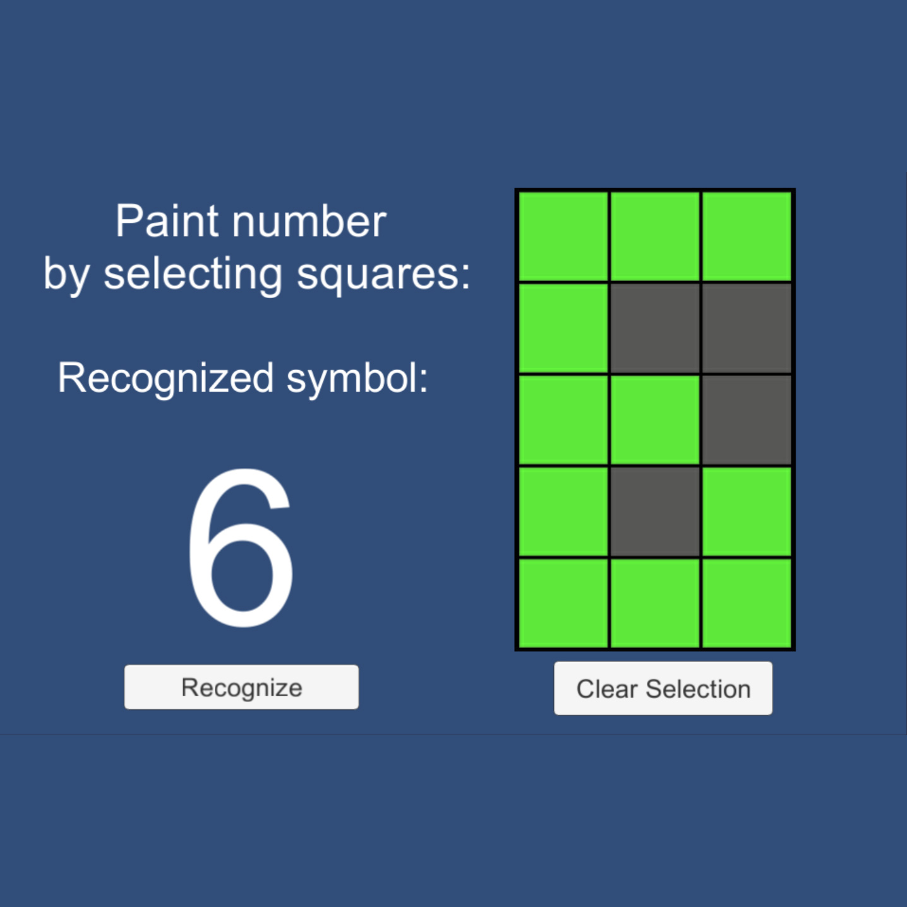

BattleCity 3d remake |
||
Battlecity remakeHere comes the description... |
||
Number parcer |
||
Number parcerThis is my neuron network tryout. I've created simple one-layer neuron network, then I've teached it manually, and now it works. It can recognize pixel numbers from 0 to 9. Also it is testing of my "isSelectable" class. |
 | |
|
It uses Bin format serialization to save weights values in .bat file. |
||